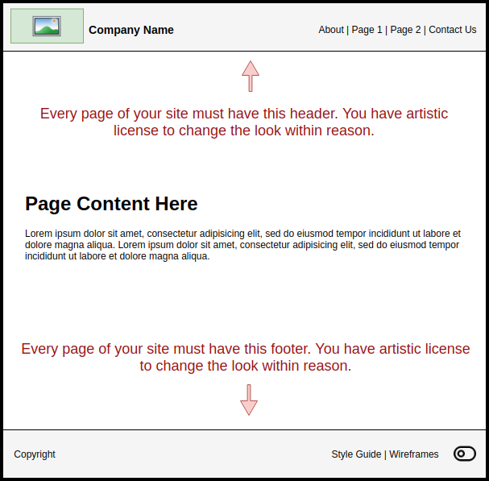

Child Page Wireframes
This week you need to decide what the child pages are going to look like. Remember you do not need to create everything from scratch. Your site is going to use a provided template which includes the header and footer already. Your main focus will be how the page content is laid out. Take a look at the following wireframe that demonstrates what the project template looks like:

Assignment:
-
Plan
Plan a design for your sites child pages that meets the following criteria:
- Must demonstrate the skills you have learned in this course.
- Must have a functional and creative design.
The requirements for the child pages are broad on purpose, this should allow you the flexibility to design pages that fit with your site plan. The grading for these pages will be subjective. You do not need to go over board with your designs but a wall of text does not demonstrate your skills. You might consider looking up website designs and borrowing ideas. You may need to research new skills and techniques for these pages. Use these pages as an opportunity to show your instructor you have grown in your skills.
-
Create
Using a wireframing tool or drawing application create the wireframe for your child pages. The following list shows some of the top drawing and wireframing tools you could use. The first two options are the simplest to use. The remaining options are more advanced and usually require creating a free account:
-
Complete
To prove that you have completed this assignment you will need to submit the wireframes you created to Canvas. You must submit a document file this week and not some other format like
xml,drawio,jpg,png, etc.Grading
Submit your wireframes by inserting them into a document and submitting the document to Canvas. Acceptable submission formats are
doc,docx,odt, orpdf. Do not upload the images individually or you will receive a 0 for failing to follow instructions.